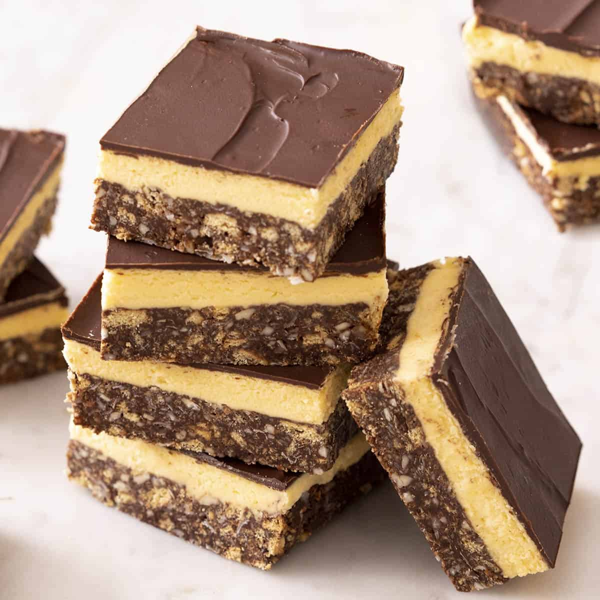

Nanaimo Bars

Mouth Watering Nanaimo Bars
The perfect dessert divided into 3 layers of coconut crumb base, custard filling,
and a chocolate ganache topping that will drive your tastebuds crazy!
Ingredients
- 1 cup butter, softened, divided
- 5 tablespoons unsweetened cocoa powder
- ¼ cup white sugar
- 1 egg, beaten
- 1 ¾ cups graham cracker crumbs
- 1 cup flaked coconut
- ½ cup finely chopped almonds (Optional)
- 3 tablespoons heavy cream
- 2 tablespoons custard powder
- 2 cups confectioners' sugar
- 4 (1 ounce) squares semisweet baking chocolate
- 2 teaspoons butter
Directions
- In the top of a double boiler, combine 1/2 cup softened butter, cocoa powder,
and sugar. Stir occasionally until melted and smooth. Beat in egg and stir until
thick, 2 to 3 minutes.
- Remove from the heat and mix in graham cracker crumbs, coconut, and almonds.
Press into the bottom of an ungreased 8x8-inch pan.
- For the middle layer, beat remaining 1/2 cup softened butter, heavy cream,
and custard powder until light and fluffy. Mix in confectioners' sugar until
smooth. Spread over the bottom layer in the pan. Chill to set.
- While the second layer is chilling, melt semisweet chocolate and 2 teaspoons
butter together in the microwave or over low heat.
- Spread melted chocolate mixture over chilled bars. Let the chocolate set before
cutting into squares.
- Enjoy!
Return to top
Return to main page